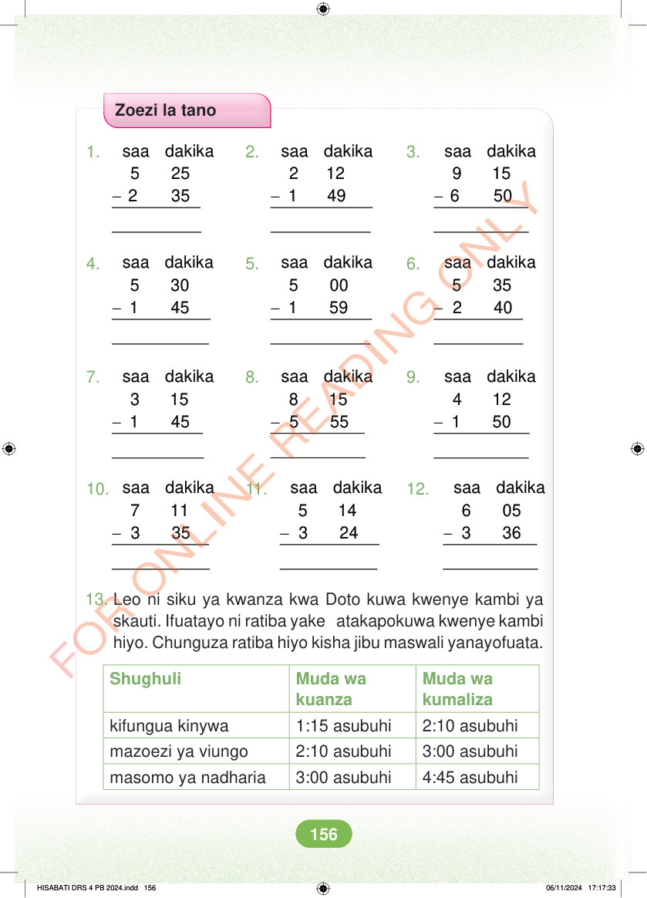

<!DOCTYPE html>
<html lang="sw-TZ"><head><meta charset="utf-8"><meta name="viewport" content="width=device-width,initial-scale=1">
<title>Hisabati: Kitabu cha Mwanafunzi Darasa la Nne</title>
<meta name="title-id" content="pg162_sec001"><meta name="page-section-id" content="170">
<link href="./content/tailwind_output.css" rel="stylesheet"><link href="./assets/libs/fontawesome/css/all.min.css" rel="stylesheet"><link href="./assets/fonts.css" rel="stylesheet">
<style>body{margin:0;background:#eef1ed}main{width:100%;display:flex;justify-content:center;padding:1rem 1rem 5rem;box-sizing:border-box}#content{width:100%;display:flex;justify-content:center}.pdf-page{position:relative;width:min(calc(100vw - 2rem),56rem);aspect-ratio:540.8980102539062/750.6610107421875;background:white;box-shadow:0 4px 24px #0002;overflow:hidden}.pdf-page img{position:absolute;inset:0;width:100%;height:100%;object-fit:fill}</style>
</head><body><main><h1 class="sr-only" id="page-heading">Ukurasa wa 162</h1><div id="content" class="opacity-0"><section role="article" data-section-type="pdf_accessible_page" data-section-id="pg162_sec001" aria-labelledby="page-heading" class="pdf-page"><p class="sr-only" data-id="pg162_gp001_tx001">Zoezi la tano 1. 2. 3. - - - saa dakika 5 25 2 35 saa dakika 2 12 1 49 saa dakika 9 15 6 50 4. 5. 6. - - - saa dakika 5 30 1 45 saa dakika 5 00 1 59 saa dakika 5 35 2 40 7. 8. 9. - - - saa dakika 8 15 5 55 saa dakika 3 15 1 45 saa dakika 4 12 1 50 10. 11. 12. - - - saa dakika 7 11 3 35 saa dakika 5 14 3 24 saa dakika 6 05 3 36 13. Leo ni siku ya kwanza kwa Doto kuwa kwenye kambi ya skauti. Ifuatayo ni ratiba yake atakapokuwa kwenye kambi hiyo. Chunguza ratiba hiyo kisha jibu maswali yanayofuata. Shughuli Muda wa kuanza Muda wa kumaliza kifungua kinywa 1:15 asubuhi 2:10 asubuhi mazoezi ya viungo 2:10 asubuhi 3:00 asubuhi masomo ya nadharia 3:00 asubuhi 4:45 asubuhi HISABATI DRS 4 PB 2024.indd 156 HISABATI DRS 4 PB 2024.indd 156 06/11/2024 17:17:33 06/11/2024 17:17:33</p></section></div></main><div class="relative z-50" id="interface-container"></div><div class="relative z-50" id="nav-container"></div><script src="./assets/offline-preloader.js?v=audiofix-20260824-1"></script><script src="./assets/scorm.js"></script><script src="./assets/base.bundle.local.js?v=audiofix-20260824-1"></script></body></html>